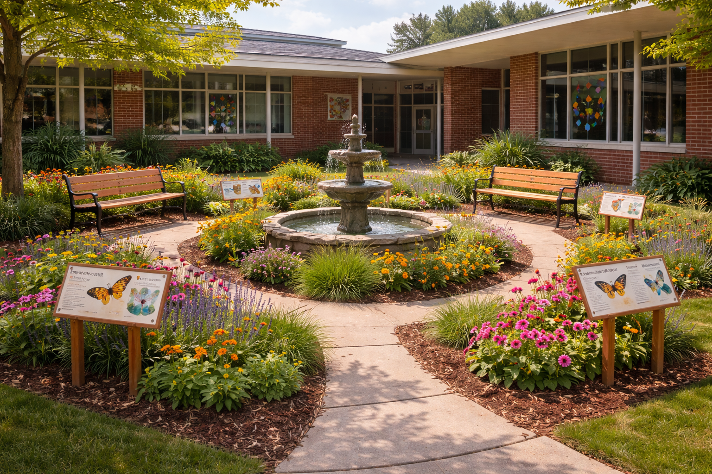

Una experiencia educativa que complementa tu jardín
El taller es una experiencia interactiva donde enseñamos a los clientes cómo funciona un jardín de mariposas, cómo cuidarlo correctamente y cómo convertirlo en un espacio lleno de vida.
No es solo información, es una guía práctica para asegurar que el jardín se mantenga saludable y cumpla su propósito.
Concepto del jardín y su diferencia con la jardinería tradicional.
Importancia ecológica y ciclo de vida.
Función de cada planta dentro del jardín.
Recomendaciones prácticas y errores a evitar.

Enfoque práctico para el cuidado diario y disfrute familiar.
Enfoque educativo e interactivo para estudiantes.
Enfoque en sostenibilidad y responsabilidad ambiental.
El taller forma parte del servicio para asegurar el éxito del jardín.
Solicitar información